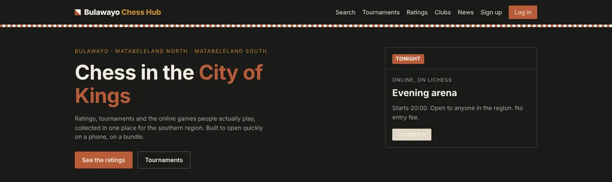

Six years in law-enforcement IT in Zimbabwe showed you what happens when a data
system is wrong and someone acts on it anyway. You see that in how I build now.
Each project below states its test count, its error rate and what it gets wrong.
I finished an MSc in Data Science at Akademia WSB in 2026. I am working through a
DevOps track. A chess federation runs its tournaments on software I wrote. A
prediction engine retrains and republishes itself every three hours.
(02) By the numbers
Every figure names its source.
Work in progress1.001Prediction error (MAE) of my FPL model in gameweek 6. The two baselines score 1.121 and 1.228. Lower is better.Source: accuracy.json, recomputed by tools/facts.py on every push
260Automated tests in Bulawayo Chess Hub, the platform a real federation uses.Source: count of test functions in github.com/percivalmahwaya/bcaChessHub, 2026-10-19
0.966AUC-ROC of the Random Forest in my MSc thesis. The next best model scores 0.867.Source: data/model_comparison.csv in crime-hotspot-dss
6Years in law-enforcement IT and data compliance before data science.Self-reported. Ministry of Home Affairs, Zimbabwe, 2013 to 2019
The first number needs context. My model has the best overall error of the three, and the
worst error on high-returning players: 5.195 against
4.751 to 4.792
for the baselines. It wins on the average and loses on the players who decide a gameweek.
Only 3 gameweeks are scored so far, so treat it as an early reading.
The engine publishes this on its own scoreboard.
(03) Selected work
Three systems. Each has a case study.

Local build, empty database. Not the live site.
Django · PostgreSQLLive
Bulawayo Chess Hub
Tournament administration for a chess association. Swiss pairing with Buchholz
tiebreaks, an Elo engine, Lichess sign-in, PGN replay and EcoCash payments through
Paynow. Administrators must use two-factor authentication.
Collects data, retrains, predicts, scores its own past accuracy against two
baselines and republishes every three hours with no input from me. Four models are
compared. The scoreboard shows where the champion loses.
A Fantasy Premier League companion for about a dozen friends. It opens on the one
decision that matters this week, explains why and links to the exact FPL screen.
It holds no passwords and cannot write to anyone's account.
Applying Machine Learning to Crime Hotspot Prediction: A Decision Support Model
for Public Safety Resource Allocation. Akademia WSB, 2026. Awarded a distinction.
The model predicts which Chicago police beats are hotspots. The thesis then ranks
beats by how stable that status is across five years, 2019 to 2023, and turns the
ranking into three patrol tiers.
34.2%
of beats are hotspots in all five years. These are Tier 1, the persistent hotspots. 30.2% are Tier 2 (hotspot in one to four years). 35.6% are Tier 3 (never).
Source: thesis Table 6, as built into app.py in crime-hotspot-dss